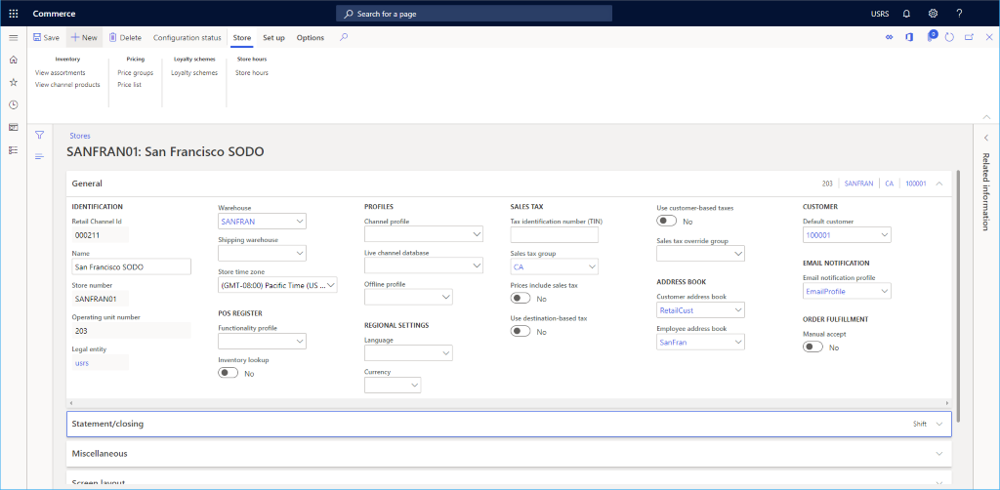
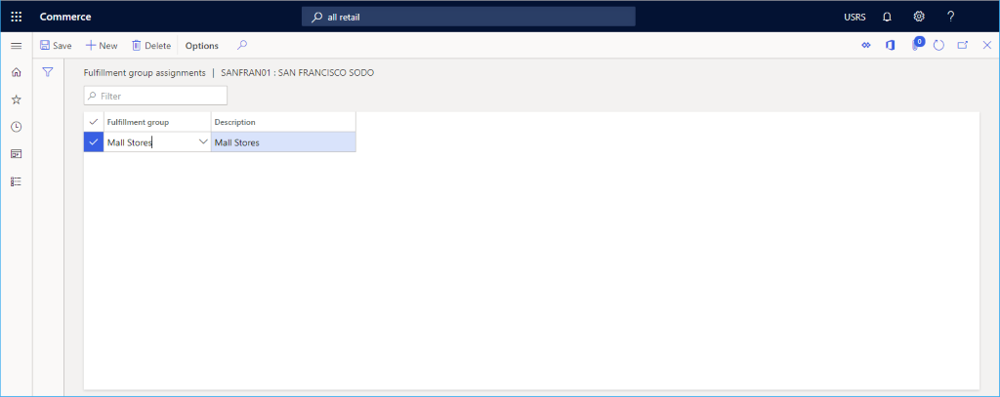

Set up a retail channel
This topic describes how to create a new retail channel in Microsoft Dynamics 365 Commerce.
Overview
Dynamics 365 Commerce supports multiple retail channels. These retail channels include online stores, call centers, and retail stores (also known as brick-and-mortar stores). Each retail store channel can have its own payment methods, price groups, point of sale (POS) registers, income accounts and expense accounts, and staff. You must set up all of these elements before you can create a retail store channel.
Before a retail channel is created, ensure you follow the channel prerequisites.
Create and configure a new retail channel
- In the navigation pane, go to Modules > Channels > Stores > All stores.
- On the action pane, select New.
- In the Name field, provide a name for the new channel.
- In the Store number field, provide a unique store number. The number can be alphanumeric with a maximum of 10 characters.
- In the Legal entity drop-down list, enter the appropriate legal entity.
- In the Warehouse drop-down list, enter the appropriate warehouse.
- In the Store time zone field, select the appropriate time zone.
- In the Sales tax group drop-down list, select an appropriate sales tax group for the store.
- In the Currency field, select the appropriate currency.
- In the Customer address book field, provide a valid address book.
- In the Default customer field, provide a valid default customer.
- In the Functionality profile field, select a functionality profile if applicable.
- In the Email notification profile field, provide a valid email notification profile.
- On the action pane, select Save.
The following image shows the creation of a new retail channel.

The following image shows an example retail channel.

Other settings
There are numerous other optional settings that can be set in the Statement/closing and Miscellaneous sections, based on the needs of the retail store.
In addition, see Screen layouts for the point of sale (POS) for information on setting up the default screen layout in the Screen layout section and Configure and install Retail hardware station (This is an external linThis link was changed due to HTMLfromRepoGenerator) for setup information about the Hardware stations section.
The following image shows an example retail channel setup configuration.

Additional channel set up
There are additional items that need to be set up for a channel that can be found on the Action pane under the Set up section.
Additional tasks required for online channel setup include setting up payment methods, cash declaration, modes of delivery, income/expense account, sections, the fulfillment group assignment, and safes.
The following image shows various additional retail channel setup options on the Set up tab.

Set up payment methods
To set up payment methods, for each payment type supported on this channel follow these steps.
- On the action pane, select the Set Up tab, then select Payment methods.
- On the action pane, select New.
- In the navigation pane, select a desired payment method.
- In the General section, provide an Operation name and configure any other desired settings.
- Configure any additional settings as required for the payment type.
- On the action pane, select Save.
The following image shows an example of a cash payment method.

Set up cash declaration
- On the action pane, select the Set Up tab, and then select Cash declaration.
- On the action pane, select New, and then create all Coin and Note denominations that are applicable.
The following image shows an example of a cash declaration.
Set up modes of delivery
You can see the configured modes of delivery by selecting Modes of delivery from the Set up tab on the Action pane.
To change or add a mode of delivery, follow these steps.
- In the navigation pane, go to Modules > Inventory management > Modes of delivery.
- On the action pane, select New to create a new mode of delivery, or select an existing mode.
- In the Retail channels section, select Add line to add the channel. Adding channels using organization nodes instead of adding each channel individually can streamline adding channels.
The following image shows an example of a mode of delivery.

Set up income/expense account
To set up income/expense account, follow these steps.
- On the action pane, select the Set Up tab, and then select Income/Expense account.
- On the action pane, select New.
- Under Name, enter a name.
- Under Search name, enter a search name.
- Under Account type, enter the account type.
- Enter text for Message line 1, Message line 2, Slip text 1, and Slip text 2 as needed.
- Under Posting, enter posting information.
- On the action pane, select Save.
The following image shows an example of an income/expense account.

Set up sections
To set up sections, follow these steps.
- On the action pane, select the Set Up tab and click Sections.
- On the action pane, select New.
- Under Section number, enter a section number.
- Under Description, enter a description.
- Under Section size, enter a section size.
- Configure additional settings for General and Sales statistics as needed.
- On the action pane, select Save.
Set up a fulfillment group assignment
To set up a fulfillment group assignment, follow these steps.
- On the action pane, select the Set up tab, then select Fulfillment group assignment.
- On the action pane, select New.
- In the Fulfillment group drop-down list, select a fulfillment group.
- In the Description drop-down list, enter a description.
- On the action pane, select Save
The following image shows an example of a fulfillment group assignment setup.

Set up safes
To set up safes, follow these steps.
- On the action pane, select the Set Up tab and click Safes.
- On the action pane, select New.
- Enter a name for the safe.
- On the action pane, select Save.